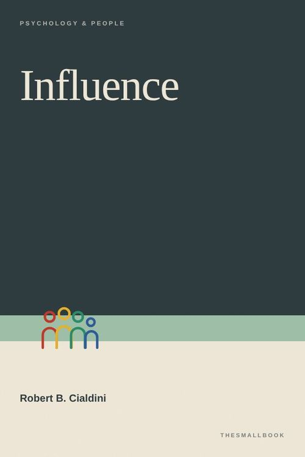

Library › Authors › Robert B. Cialdini
Books by Robert B. Cialdini
Robert B. Cialdini has one book in the library. Every book here is read down to the big idea, the lessons, the lines worth keeping and the actions worth taking. Start with the summary, then buy the full book if it earns a place on your shelf.

Influence: The Psychology of Persuasion
1984 · 9 min · 7 lessons
Persuasion runs on fixed psychological triggers: reciprocity, commitment, social proof, liking, authority, scarcity, unity. Know them or be played by them.
Cialdini spent years undercover - training with car dealers, fundraisers, telemarketers, and recruiters - to catalog the psychology that makes people comply. His finding: humans run on automatic 'click-whirr' response patterns that served us well for millennia and are now systematically exploited. The principles (reciprocity, commitment/consistency, social proof, liking, authority, scarcity, and - added later - unity) function as shortcuts we can't afford to abandon, which makes recognizing their weaponized forms...
Lessons in the summary
- Click-Whirr: The Automatic Yes
- Reciprocity: The Debt You Didn't Ask For
- Commitment & Consistency: The Foolish Hobgoblin
- Social Proof: Truths Are Us
- Liking & Authority: The Friendly Expert Problem
- Scarcity: The Psychology of Less
- Unity: The 'We' Beyond Liking
Lines worth keeping
- The way to love anything is to realize that it might be lost.
- We all fool ourselves from time to time in order to keep our thoughts and beliefs consistent with what we have already done or decided.
- Where all think alike, no one thinks very much.
Questions Robert B. Cialdini helps answer
Read nearby authors next
- Devdutt Pattanaik 5 books
- Malcolm Gladwell 5 books
- A.P.J. Abdul Kalam 4 books
- Adam Grant 4 books
- Chip Heath & Dan Heath 4 books
- Daniel H. Pink 3 books
- Gurcharan Das 3 books
- Jonathan Haidt 3 books
Questions Robert B. Cialdini helps answer
Where should I start with Robert B. Cialdini? Start with Influence: The Psychology of Persuasion: Persuasion runs on fixed psychological triggers: reciprocity, commitment, social proof, liking, authority, scarcity, unity. Know them or be played by them.